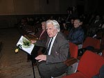
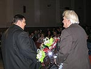
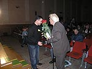
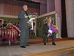
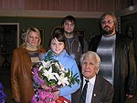
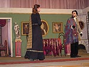
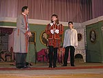
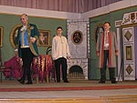
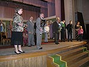

ОДИССЕЯ НИКОЛАЯ ТРОЯНОВА
Под занавес уходящего 2006 года, 16 декабря, в Доме культуры строителей наш город отметил 85-летний юбилей Николая Алексеевича Троянова. Почетного гражданина г. Николаева, Почетного члена Пушкинского клуба, Заслуженного артиста Грузии пришли приветствовать Заместитель Николаевской Облгосадминистрации Сергей Николаевич Карцев (месяц назад он финансово поддержал постановку пьесы Н.А. Троянова «Сковорода»), заместитель Николаевского городского головы Юрий Исаевич Гранатуров, директор Областного телевидения Александр Александрович Митрофанов, представители управлений культуры области и города, средств массовой информации, сын его, Алексей Николаевич Троянов, со своей семьей, городская общественность и многочисленные ученики и друзья. В исполнении руководимого им 43 года Народного драматического театра Маэстро театрального искусства показал зрителям несколько сцен из написанных им пьес «Триумф старого дома» и «Сковорода». После продолжительных аплодисментов благодарные зрители буквально завалили цветами, подарками и вниманием юбиляра. Раздумывая над успехом деятельности и жизни Николая Троянова, прихожу к выводу о том, что его имя и фамилия во многом предопределили и судьбу. «Бывают странные сближения», заметил А.С. Пушкин, и первым из таких странных сближений стало то, что имя привело Троянова именно в Николаев. Географическая одиссея Николая Алексеевича берет начало в селе Косицкое Новгородской области, по окончании школы он заканчивает полковую школу в г. Шепетовке на Украине и в Великой Отечественной войне участвует уже в офицерском звании в боях под Киевом, Ленинградом, создает партизанский отряд у себя на родине, в Новгородской области, а после освобождения Ленинграда, в рядахСоветской Армии дошел до Польши, где был тяжело ранен. Награжден тремя орденами и 20 медалями. После войны с отличием в Москве заканчивает театральное училище им. М.С. Щепкина при Малом театре. Его учителями были великие В. Пашенная, И. Ильинский, К. Зубов, Е. Турчанинов и Н. Анненков, а коллегами по учебе Михаил Ульянов, Евгений Весник, Павел Луспекаев и Николай Тимофеев. И кто знает, если бы он не был на оккупированной территории, то и остался бы в Москве, как того хотели его учителя. Но судьба и время распорядились иначе. Его приглашают в Тбилиси. С 1950 по 1960 гг. он актер Тбилисского русского театра им. А.С. Грибоедова. Его блестящая игра принесла популярность и в 1957 г. ему присвоили звание «Заслуженного артиста Грузии». В Тбилиси он организовал самодеятельный театр, в котором была поставлена написанная им пьеса «Мост». Здесь он встречает свою судьбу, артистку Тбилисского ТЮЗа, позднее Народную артистку Украины, Нину Петровну Троянову (1937-1986), мать ее была уроженкой Николаева, и это привело его сюда. С 1960 г. оба они работают артистами Русского драматического театра. Так что, имя его и судьба отнюдь не случайно привели Николая в город Святого Николая, и в этом странном сближении я вижу духовное благословление Святителем и Чудотворцем его успешной деятельности именно в нашем городе. Второе странное сближение связано с несомненной античностью его фамилии. Мастерство свое Троянов оттачивал в городе, на земле которого родился родоначальник европейской культуры великий Гомер. Как известно греки 10 лет штурмовали Трою и, наверное, ее не взяли бы, если бы хитроумный Одиссей не прокрался через канализационный ход в город-крепость и не выкрал бы Палладий, который охранял Трою. А затем Одиссей, придумав Троянского коня, которого (вместе с греческими воинами) сами троянцы втащили в город, все-таки взял Трою. Театр начинался с Гомера, а слово «Мастер» - это производное от древнегреческого слова «Мастор» и переводится оно, как ищущий. И это вполне относится к Николаю Алексеевичу. Его духовная одиссея гораздо шире географической. Она охватывает всю европейскую культуру, начиная с Гомера, Софокла, Геродота и до Эразма Роттердамского, Вольтера, Рафаэля, Моцарта, Сковороды и Пушкина. За многие годы Н.А. Троянов собрал обширнейшую библиотеку. Его трепетное отношение к книге превосходит все, что мне довелось видеть и знать о наших николаевских библиофилах. Прежде всего, его книги всегда в работе и все прочитаны от корочки и до корочки. Это храм его, европейски образованного, ума. О европейской направленности деятельности Н.А. Троянова можно судить по названиям написанных им книги «Европейцы» и пьес: «Ольвия», «Кассандра и Кретин», «Рафаэль», «Шутка Вольтера», «Сковорода», «Мичман Даль», «Макаров и Верещагин». Но, создание пьес это всего лишь начало движения такого объекта, каким есть драматический театр. Если вы драматург, то вам нужно найти еще театр, режиссера, который бы взялся за постановку вашей пьесы и нужны актеры, которым бы нравилось это играть, не говоря уже о публике, которая хотела бы это смотреть. По этой причине большинство пьес остается в столах драматургов. В связи с этим театр в его комплексном виде представляется мне некоей театральной Троей, штурм которой многими драматургами может вообще не иметь разрешения. И в этом смысле Н.А. Троянов вполне выглядит хитроумным Одиссеем, создав в Николаеве Народный драматический театр, как Троянского коня указанной театральной проблемы. Создав этот театр, он стал свободным и независимым в выборе репертуара и формы его постановки, разумеется, не от денег, которых у него всегда не хватает. И, самое главное, драматург Троянов получил редкую возможность доводить свои пьесы в своем театре до совершенства. Независимость и самоуважение неминуемо привели нашего Одиссея и его детище к уважению и, как мы увидели на юбилее, к далеко неформальному почитанию. Народный драматический театр – это уникальный опыт создания народной школы театрального искусства, экспериментальная база мастерства, база для проверки и отработки, созданных Трояновым, драматургических произведений. Его школу театрального искусства прошло несколько сотен человек, многие из которых стали профессиональными артистами и работают сегодня в Николаеве: главный режиссер Украинского театра драмы и комедии Олег Игнатьев, заслуженная артистка Украины Надежда Игнатьева, Сергей Чверкалюк, Наталья Малышевская, Лариса Злочевская (Русский драматический театр); в Киеве: Наталья Андрейченко, Ирина Бойко, Инна Коваленко; в Харькове – Лидия Дибровная, которая ныне работает в Праге, в Москве: актеры Марина Миронова, Татьяна Юраш и Татьяна Пахомова (театр «Луны»); в Санкт-Петербурге: Сергей Русскин (БДТ им. Г. Товстоногова) и киноактер Игорь Лифанов; Александр Москвин ныне работает в Германии. Все, кто прошел и проходит сегодня школу Троянова, это люди изначально неординарные, а задержались они тут только потому, что им интересно работать с вечно ищущим Художником и Мастером. Это ж ведь народный театр, здесь денег не платят, здесь любят искусство и из любви к нему священнодействуют. Благодарные ученики не забывают своего Учителя и каждый год, в день его рождения, звонят ему отовсюду. Те же, кто находился в Николаеве пришли предметно его поздравить. И, что еще примечательно, у всех у них, без исключения, лица выглядят какими-то просветленными. Какие же вершины творчества удалось взять нашему Одиссею в процессе своих поисков? Во-первых, за 43-летнюю историю театром поставлено более 100 пьес и каких. В репертуаре Народного театра были пьесы, за которые не брались и профессиональные театры: «Немая жена» А. Франса, «Верните деньги за обучение» Ф. Каринти, «Причуды Белисы» Лопе де Вега, «Монсерра» Э. Роблеса (перевод с французского). Спектакль «Электра» Софокла игрался в Ольвии. Спектакли Пушкина «Моцарт и Сальери», «Барышня крестьянка» были показаны в Пушкинском клубе. Спектакль «Триумф старого дома» игрался перед студентами в бывшем педагогическом институте, а ныне университете. Свое 40-летие театр отметил постановкой пьесы Джордано Бруно «Подсвечник», исполненной всего лишь один раз за 400 лет! Здесь Николаю Алексеевичу помог недюжинный дар драматурга, который без потери оригинальной фабулы и авторства, сделал длиннейшую пьесу краткой, динамичной и содержательной. Во-вторых, Николаем Алексеевичем написано более 20 пьес, тематика большей части которых посвящена истории Николаевского края и Украины. В истории культуры нашего края Троянов один из самых активных драматургов, резонансно и плодотворно отзывающийся на запросы времени. Назову пьесы: «Магда», посвященная подвигу помощницы Виктора Лягина Магде Дукарт, «Макаров и Верещагин», «Мичман Даль», «Ольвия», «Триумф старого дома», «Завтрак у городского головы» о Леонтовиче, основателе нашего зоопарка. 10 сентября 2003 г., во время международного праздника «Музы Ольвии» прямо на территории национального археологического заповедника была поставлена пьеса «Ольвия». Влияние на актеров содержания пьесы, написанной специально для этого священного места, было столь велико, а игра была настолько вдохновенной, что многие из моих знакомых археологов подходили ко мне и спрашивали: не профессионалы ли это играют? На это пришлось им ответить, что пьеса написана и поставлена профессионалом, ученики которого тоже стали профессионалами. В-третьих, Николай Алексеевич, меня всегда поражал своим точным подбором ролей для артистов своего театра. Точным не только во внешнем, но, более всего, внутренним сходством со своими героями, т.е. подготовленностью пройденной жизнью именно к данной роли. В пьесе Троянова «Триумф старого дома» есть Егорий, «вечный студент», который говорит: «Вот днем с огнем ищу я человека…». Так вот, этот вечный студент и есть Троянов, который всю свою жизнь ищет Человека и ради него не устает священнодействовать. Вообще говоря, творчество любого, более или менее значимого драматурга, писателя, поэта, всегда было имманентным. Думаю, что, прежде всего, именно в этом проявляется талант и мастерство Троянова, как режиссера. Умение разглядеть талант в актерах это тоже мхатовская школа-студия им. М.С. Щепкина, который любил говорить актерам: священнодействуй или убирайся вон! Этот жизненно-важный принцип и составляет сущность деятельности Троянова, как режиссера. В-четвертых, Николаем Алексеевичем написано и издано 4 книги, 5-я находится в издании, и несколько десятков статей, в первую очередь, о людях, которые ему встретились на жизненном пути и удивили его. Это долг, исполненный судьбою, вечная и благодарная память тем людям, которые доставили радость при жизни. По славянскому обычаю Н.А. Троянов устроил фуршет своим многочисленным ученикам, на котором молодое поколение артистов его театра преподнесли ему свои подарки. На это Маэстро ответил следующее. Гляжу на вас и думаю, что мне все-таки удалось разгадать некую тайну театрального искусства. Разумеется, она многогранна и включает в себя многолетний опыт работы в театре. Но, суть ее заключена в Пушкинских словах: «Нас мало избранных счастливцев праздных, Пренебрегающих презренной пользой, Единого прекрасного жрецов». И это, как мне кажется, и есть та самая формула Палладия Трои театрального искусства, которую Николай Троянов, как Мастор и Одиссей, нашел за 61 год работы в театре. Долгих лет вам жизни, Николай Алексеевич, и да хранит Вас Господь-Бог! |
 Н. А. Троянов  Поздравления от С. Н. Карцева  Поздравления от Ю. И. Гранатурова  Поздравления от А. А. Митрофанова  Н. А. Троянов с семьей сына  Из спектакля "Триумф старого дома"  Из спектакля "Сковорода"  Из спектакля "Сковорода"  Поздравления юбиляру |
Анатолий Золотухин , председатель Пушкинского клуба.